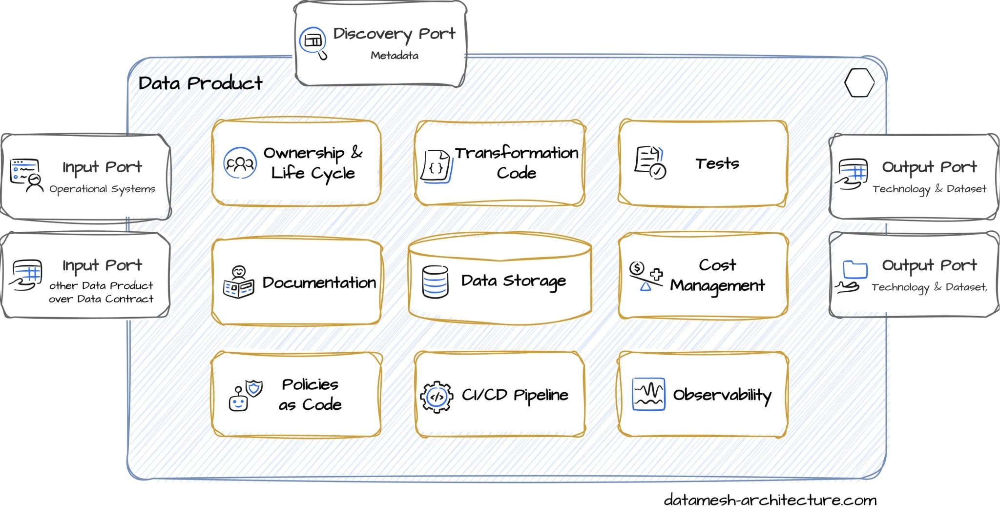
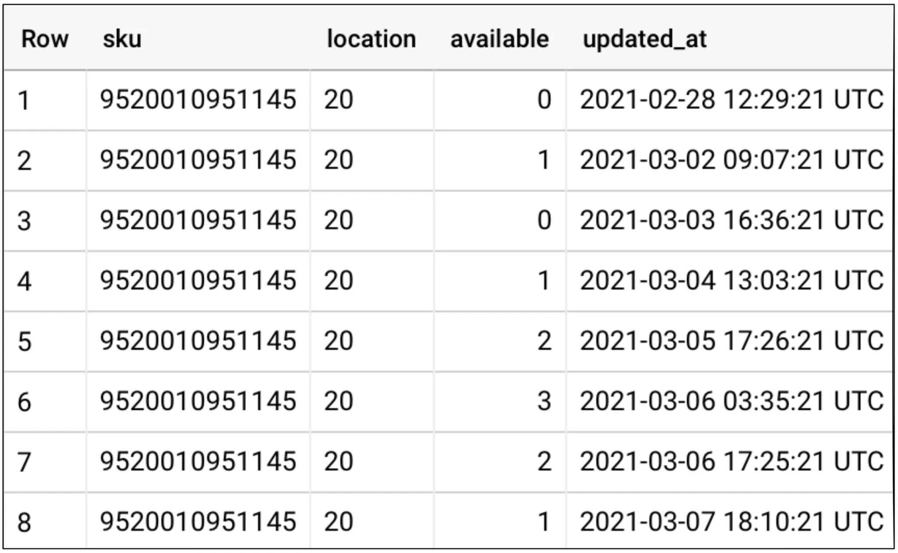

原文地址
Kimi 归纳总结
此文的核心内容是对数据产品的概念、架构、实现以及数据网格管理器的介绍和解释。以下是对这些核心内容的总结归纳：
-
数据产品定义：数据产品是一种技术实现，它包含所有必要的组件来处理和存储领域数据，以供分析或数据密集型用例。它是从消费者的角度设计的，以提供最佳的用户体验，并可能具有消费者愿意支付的价值。
-
数据产品与数据即产品的区别：数据产品遵循数据即产品的原则，但它们并不是同义词。数据产品更侧重于技术实现和内部数据处理，而数据即产品强调的是从消费者需求出发的产品设计理念。
-
数据产品架构：数据产品由多个组件构成，包括输出端口、输入端口、发现端口、所有权、转换代码、数据存储、测试、文档、成本管理和策略即代码等。这些组件共同工作，确保数据产品的质量和可用性。
-
数据产品示例：文中提供了几个数据产品的例子，如搜索查询、文章管理、订单处理和实时业务仪表板等，展示了数据产品在实际业务中的应用。
-
数据网格管理器：这是一个工具，用于发现、管理和治理数据产品。它利用数据产品的元数据构建一个全面的数据产品清单，帮助用户导航复杂的数据网格，并找到相关的、值得信赖的数据产品。数据网格管理器还支持数据合同的全生命周期管理，并通过REST-API与数据平台集成，自动化IAM权限的创建。
-
数据产品实现：文中还介绍了如何使用AWS S3和Athena技术栈实现数据产品，包括使用Terraform模块配置必要的服务，以及如何通过CI/CD流水线进行部署和元数据管理。
整体而言，这篇文章详细阐述了数据产品的理论基础、组成部分、实际应用案例以及如何通过数据网格管理器进行有效管理。这些内容对于理解和实施现代数据驱动的业务策略具有重要意义。
数据产品与数据即产品
“产品”一词来源于近年来进入软件开发的产品思维方法。Zhamak Dehghani 在数据网格的第二核心原则中应用了这个术语：数据即产品。这意味着软件，或者说现在数据，始终是从消费者的角度进行设计的，以便他们获得最佳的用户体验。就像实物产品一样，这些产品应该为满足消费者的需求而持续开发。它们应该以易于理解的方式（直观地或通过说明书）向客户解释，应该优化以便以最适合用户的方式轻松访问，也许还在组织内部进行宣传以展示潜力。因此，它们也可能有一个消费者愿意支付的价格。现在，数据被视为对公司有价值的资产，而不仅仅是软件开发的副产品。
数据产品这一术语源自数据即产品原则，并遵循其理念，但不应视为同义词。让我们尝试一个定义：
“数据产品是一个逻辑单元，包含了处理和存储领域数据以供分析或数据密集型用例的所有组件，并通过输出端口将其提供给其他团队。”
—— JOCHEN CHRIST
datamesh-architecture.com
因此，数据产品是一种技术性的东西，由数据产品开发者实现。它使用数据技术来存储和处理大量数据集，通常是数百万条记录以上。数据产品的大小设计是为了涵盖连贯的领域概念或用例，它们本身就具有价值。最大尺寸由一个团队可以处理的范围定义。数据产品可以大致与微服务或自包含系统相比较，但使用的是数据技术，并服务于分析需求。尽管称之为产品，但数据产品的消费通常是其他内部团队，而不是外部客户。
接下来是第二部分的翻译：
数据产品示例
产品搜索团队提供了一个名为“搜索查询”的数据产品，其中包含了用户在搜索栏输入的所有查询、结果数量以及用户点击的条目信息。
文章管理团队提供了一个名为“文章”的数据产品，包含文章的主数据，包括当前状态和历史记录。
结账团队提供了一个名为“订单”的数据产品，包含自2020年以来的所有订单。它有两个输出端口：一个包含个人身份信息（PII），一个删除了个人身份信息。
履约团队有一个名为“货架空位”的数据产品，包含过去3个月未售出的所有文章。
管理支持团队使用其他数据产品创建了一个实时业务仪表板数据产品供CEO使用。它不共享数据，也没有输出端口。
推荐团队使用其他数据产品来训练一个用于推荐的机器学习模型。机器学习模型以Tensorflow SavedModel目录的形式共享在对象存储上。营销团队使用这个模型在通讯中为特定客户做出推荐。
数据产品架构
数据产品包含多个组件，构建成一个连贯的单元，通常在一个Git仓库中定义。下图展示了数据产品的典型组件。

数据产品组件
数据产品应用了信息隐藏的设计原则。它有对外的接口和内部组件。组件的实际实现可能因用例和数据平台而异。
输出端口
输出端口代表数据产品的主要API：它们代表以表格、文件或主题形式对结构化数据集的只读访问。一个数据产品可以有多个输出端口：它们可能以不同技术提供相同的数据集或同一技术中的不同数据集，例如，一个输出端口包含个人身份信息数据，第二个输出端口删除了个人身份信息。当需要结构性变更以随时间发展数据产品时，也可以添加新的输出端口。

作为输出端口的表格示例
输出端口的主要接口技术是SQL。它允许简单访问大型数据集，并受到几乎所有分析工具的支持。输出端口通常实现为SQL视图，作为抽象层，使得在不影响数据消费者的情况下可以更改底层数据结构。输出端口的其他接口技术包括文件，或用于流处理的主题，或作为与操作系统的异步API。
输出端口定义了所提供数据集的模型。这个模型在一个模式中定义，包含所有表格、属性和类型。典型技术包括SQL DDL、dbt模型、Protobuf、Avro或JSON模式。模型也可以在数据目录条目中描述。
- name: stock_last_updated_v1
description: >
Current state of the stock.
One record per SKU and location with the last updated timestamp.
columns:
- name: sku
type: string
description: Stock Keeping Unit (SKU), the business key of an article.
tests:
- not_null
- name: location
type: string
description: The ID of the warehouse location.
tests:
- not_null
- name: available
type: number
description: The number of articles with this SKU that are available at this location.
tests:
- not_null
- dbt_utils.expression_is_true:
expression: "col_a >= 0"
- name: updated_at
type: timestamptz
description: The business timestamp in UTC when the available was changed.
tests:
- not_null
如果数据产品仅用于团队内部的分析用例，输出端口是可选的或可能是私有的。
通过数据合同管理对输出端口的访问。
输入端口
数据产品可以有两种类型的数据源：操作系统或其他数据产品。
在数据网格中，开发操作系统的团队也在数据产品中提供其相关的领域数据。通常这是通过异步主题实现的，最好是通过使用定义的领域事件。然而，最终如何将领域数据摄取到其数据产品中，取决于领域团队的决定。
数据产品也可以通过其输出端口使用其他数据产品，当它们有商定的数据合同时。它们可以由同一个团队或其他团队拥有。这对于面向消费者的数据处理产品或聚合数据产品是典型的，但源数据处理产品也可能链接其他领域数据，当有用时，例如，查询主数据。
发现端口
数据消费者需要找到对他们相关的数据产品。由于数据通常具有特定领域的涵义，因此提供数据模型语义的详细描述非常重要。
进一步的元数据，如联系方式、成熟度水平、通过其他人使用的数据产品、数据质量测试或服务水平目标，对于数据消费者来说是重要的，以便他们可以决定一个数据产品是否值得信赖且适合他们的用例。
使用CI/CD流水线步骤自动将元数据发布到数据目录和数据产品清单中，如数据网格管理器，是一个好的做法。
所有权
一个数据产品由一个理解业务领域、业务流程和数据的单个团队开发和维护。该团队负责提供承诺的数据质量和服务水平目标。一个数据产品有一个专门的联系人，即团队的产品所有者，他最终负责数据产品及其质量。
产品所有者负责数据产品的生命周期和演变，结合（潜在）消费者的需求和领域内部的分析需求。他们还设定了对使用数据产品收取的价格。
转换代码
数据需要被清洗、聚合、组合和转换，以实现输出端口模式或回答分析问题。
使用什么技术，以及代码如何内部组织，是数据产品的一个实现细节。它取决于数据平台，实现细节由开发团队决定。
在许多情况下，使用SQL查询进行简单转换，使用Apache Spark进行复杂流水线。
使用调度和编排工具，如Airflow，来运行转换代码。
数据存储
数据产品通常需要在某种数据存储中存储大量数据，如对象存储中的表格或文件。数据存储通过数据平台作为自助服务提供。一个数据产品有自己的私有领域，与其他数据产品隔离。
使用什么技术和数据如何内部组织，是数据产品的一个实现细节。它取决于数据平台，由开发团队决定。在许多情况下，使用列式存储技术。
测试
数据产品提供管理和高质量的数据集，所以就像任何软件工程学科一样，测试是必不可少的。有不同类型的测试：
单元测试测试转换代码本身。它们使用固定的输入数据，并定义预期的输出数据。
期望测试在部署期间对实际数据模型进行，并验证输入端口、中间模型和输出端口的源数据符合定义的期望。
质量测试定期在真实数据上运行，以监控服务水平目标。
文档
当领域数据与其他团队共享时，描述数据的语义和数据创建的业务背景非常重要。
除了对数据模型属性的描述，良好的文档还提供了一个介绍，关于数据集可以期待什么，以及哪些数据可能有趣，以及如何访问它们的初步提示。
实现文档的一个好方法是提供一个带有示例查询的交互式笔记本（Jupyter、Google Collab、Databricks Notebook）。
成本管理
数据技术在规模化使用时很快变得昂贵。因此，监控数据产品的成本非常重要。它们可能是向数据消费者开具的价格的基础，如数据合同中所商定的。
策略即代码
全局策略是数据网格中的游戏规则，由联邦治理组定义，如命名约定、数据分类方案或访问控制。
虽然大多数策略应在数据平台级别实现，但某些策略需要在数据产品级别配置，特别是当需要领域知识或产品所有者需要决定权限时。例如，领域数据的列级分类、PII标记或访问控制。
CI/CD流水线
数据产品有自己的CI/CD流水线和基础设施资源定义。CI/CD流水线在转换代码或数据模型更改时触发，执行测试，并将数据产品部署到数据平台，与全球策略保持一致。数据平台团队可能为数据产品团队提供模块或模板以供使用。
可观察性
数据产品可以具有额外的端口和功能，这些端口和功能不是由数据消费者直接使用，但对于数据产品的运营非常重要。这些包括用于监控、日志记录和管理员功能的端口。
数据产品规范
为了描述数据产品的元数据，在数据产品的仓库中通常有一个数据产品规范文件，或者通过数据平台的部署过程生成。
info:
id: "shelf_warmers"
name: "Shelf Warmers"
description: "Shelf warmers are products that are not selling for 3 months and are taking up space on the shelf."
status: "active"
archetype: "source-aligned"
maturity: "managed"
owner:
teamId: "fulfillment"
inputPorts:
- id: "stock-service"
operationalSystemId: "stock-service"
type: "Kafka Topic"
location: "fulfillment.stock.events.v1"
outputPorts:
- id: "shelf_warmers_v1_sql"
name: "shelf_warmers_v1_sql"
description: "All articles that are not selling for 3 months and are taking up space on the shelf."
type: "SQL"
location: "fulfillment.shelf_warmers_v1"
links:
catalog: "https://datacatalog.example.com/fulfillment/shelf_warmers/shelf_warmers_v1"
jdbc_endpoint: "jdbc:awsathena://AWSRegion=..."
containsPii: false
serviceLevelObjectives: []
tags:
- "AWS"
- id: "shelf_warmers_v1_s3"
name: "shelf_warmers_v1_s3"
description: "All articles that are not selling for 3 months and are taking up space on the shelf. Provided as parquet files on s3."
type: "S3"
status: "active"
links:
repository: "https://git.example.com/fulfillment/dataproducts/shelf_warmers"
dataCatalog: "https://datacatalog.example.com/fulfillment/shelf_warmers"
tags: ["AWS", "S3", "Athena"]
数据产品实现
现在让我们来看一个例子，如何使用AWS S3和Athena技术栈实现一个实际的数据产品。
在这个例子中，数据平台团队提供了一个Terraform模块，该模块在数据平台上配置所有必要的服务以运行数据产品，这些服务符合治理组中定义的政策和惯例。
数据产品开发者为每个数据产品都有一个Git仓库。他们使用提供的Terraform模块，并为其数据产品进行配置。在同一仓库中，他们将转换代码定义为SQL查询和包含输出端口模型的JSON模式文件，以及数据模型的详细描述。
module shelf_warmers {
source = "git@github.com:datamesh-architecture/terraform-dataproduct-aws-athena.git"
version = "0.2.1"
domain = "fulfillment"
name = "shelf_warmers"
description = "Shelf warmers are products that are not selling for 3 months and are taking up space on the shelf."
schedule = "0 0 * * ? *" # Run at 00:00 am (UTC) every day
transform = {
query = "sql/transform.sql"
}
output = {
format = "PARQUET"
schema = "schema/shelf_warmers.schema.json"
roles_allowed = ["coo"] # Policy as code
}
}
通过通常由CI/CD流水线触发的terraform apply，所有所需资源都被配置，如S3存储桶、AWS Athena资源和lambda函数。此外，在AWS IAM中也创建了权限。
该流水线还将元数据推送到数据目录和数据产品清单中。
在GitHub上找到一个Terraform模块实现的示例。
数据网格管理器
在我们的数据网格项目中，我们注意到，缺乏良好的工具来发现、管理和治理数据产品。这就是为什么我们创建了数据网格管理器。它使用数据产品的元数据构建一个全面的数据产品清单。这个清单是导航复杂数据网格的强大入口，可以找到对数据消费者相关的值得信赖的数据产品。数据网格地图可视化了数据网格，并帮助理解数据网格拓扑。
数据网格管理器还支持数据合同的全生命周期作为自助服务：请求并接受对数据产品的访问，以同意双边数据合同。定期的重新评估日期允许数据合同被续订或终止，例如，当一个数据产品版本被弃用时。
通过REST-API，数据网格管理器可以完全集成到所有数据平台中，并在创建或更新数据合同时触发数据平台中自动化创建IAM权限。